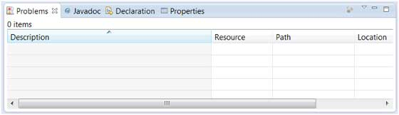
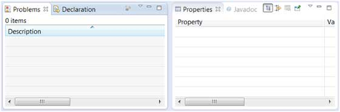
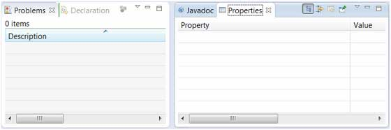
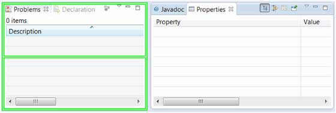
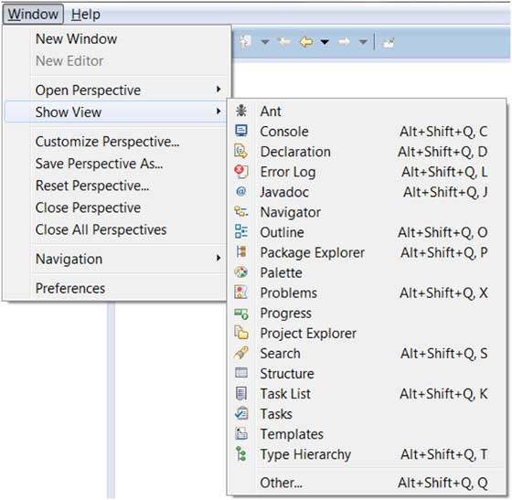
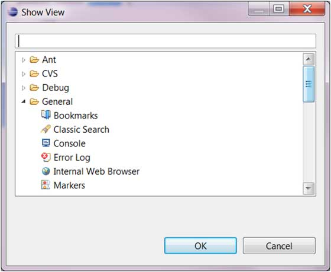

Eclipse - Explore Views
About Views
Eclipse views allow users to see a graphical representation of project metadata. For example the project navigator view presents a graphical representation of the folders and files associated with a project and properties view presents a graphical representation of an element selected in another view or editor.
An eclipse perspective can show any number of views and editors. All editor instances appear in a single editor area whereas views are placed inside view folders. A workbench window can display any number of view folders. Each view folder can display one or more views.
Organizing Views
The following picture shows four views arranged in a view folder.
The picture given below shows the same four views arranged in two view folders.
Moving views
To move a view from one view folder to another just click on the view title and drag to the title bar area of another view folder. The green line shown below is a result of dragging the title bar of the Properties view from one view folder to the title bar area of another view folder. The Properties view can be moved to where the green line is by releasing the mouse button and sending out a drop event.
Creating View Folders
View folders can be dynamically created by dragging the title bar of a view to anywhere outside the editor area and title bar of another view folder. As you drag the title bar around green lines will indicate where exactly the new view folder will be created.
Moving the drag icon to the bottom of a window allows you to create a view folder that spans the entire width of the window. Moving the drag icon to the left or right edge of window allows you to create a view folder that spans the entire height of the window.
Opening a view
To open a view click on the Window menu and select the Show View menu item and either the menu item that represent a view or the Other menu item.
Clicking on the Other menu item brings up the Show View dialog box that allows you to locate and activate a view.
The views are organized by category. To quickly locate a view just type the name of a view into the filter text box. To open a view, select it and click on the OK button.
The subsequent pages of this tutorial introduce you to a number of useful views.